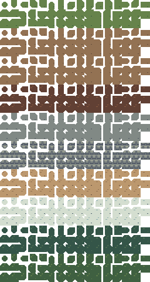
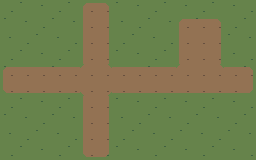
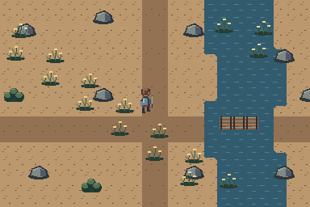

Search the Art Bible
Search works locally, including offline.
Art Bible · Tilesets
Transitions, corners and path networks
All 47 neighbor patterns, exact coordinates and a repeatable method for boundary tests.
Edition 0.1.0 · Owner review pending for new reference art
On this page
The complete pattern convention
Use an eight-neighbor blob convention with bits N=1, NE=2, E=4, SE=8, S=16, SW=32, W=64, NW=128. The center belongs to the foreground terrain. A diagonal bit is retained only when both adjacent cardinal bits are present. For example, keep NE only if N and E are present. Enumerating masks 0–255 and gating corners leaves exactly 47 unique patterns.
Mask 0 is an isolated patch; 255 is fully surrounded; masks with one cardinal connection form dead ends; opposing connections form narrow corridors; three and four connections support junctions. Missing diagonal bits between present sides produce concave corners. Outer corners are convex boundaries. Repeated stair-step placement of corner patterns provides pixel diagonals without rotating tiles. This is a two-material overlay convention, not a complete three-material Godot terrain solver.
All 47 required masks and atlas coordinates
| Mask | Bits N NE E SE S SW W NW | Column | Row within family |
|---|---|---|---|
| 0 | 0 0 0 0 0 0 0 0 | 0 | 0 |
| 1 | 1 0 0 0 0 0 0 0 | 1 | 0 |
| 4 | 0 0 1 0 0 0 0 0 | 2 | 0 |
| 5 | 1 0 1 0 0 0 0 0 | 3 | 0 |
| 7 | 1 1 1 0 0 0 0 0 | 4 | 0 |
| 16 | 0 0 0 0 1 0 0 0 | 5 | 0 |
| 17 | 1 0 0 0 1 0 0 0 | 6 | 0 |
| 20 | 0 0 1 0 1 0 0 0 | 7 | 0 |
| 21 | 1 0 1 0 1 0 0 0 | 8 | 0 |
| 23 | 1 1 1 0 1 0 0 0 | 9 | 0 |
| 28 | 0 0 1 1 1 0 0 0 | 10 | 0 |
| 29 | 1 0 1 1 1 0 0 0 | 11 | 0 |
| 31 | 1 1 1 1 1 0 0 0 | 12 | 0 |
| 64 | 0 0 0 0 0 0 1 0 | 13 | 0 |
| 65 | 1 0 0 0 0 0 1 0 | 14 | 0 |
| 68 | 0 0 1 0 0 0 1 0 | 15 | 0 |
| 69 | 1 0 1 0 0 0 1 0 | 0 | 1 |
| 71 | 1 1 1 0 0 0 1 0 | 1 | 1 |
| 80 | 0 0 0 0 1 0 1 0 | 2 | 1 |
| 81 | 1 0 0 0 1 0 1 0 | 3 | 1 |
| 84 | 0 0 1 0 1 0 1 0 | 4 | 1 |
| 85 | 1 0 1 0 1 0 1 0 | 5 | 1 |
| 87 | 1 1 1 0 1 0 1 0 | 6 | 1 |
| 92 | 0 0 1 1 1 0 1 0 | 7 | 1 |
| 93 | 1 0 1 1 1 0 1 0 | 8 | 1 |
| 95 | 1 1 1 1 1 0 1 0 | 9 | 1 |
| 112 | 0 0 0 0 1 1 1 0 | 10 | 1 |
| 113 | 1 0 0 0 1 1 1 0 | 11 | 1 |
| 116 | 0 0 1 0 1 1 1 0 | 12 | 1 |
| 117 | 1 0 1 0 1 1 1 0 | 13 | 1 |
| 119 | 1 1 1 0 1 1 1 0 | 14 | 1 |
| 124 | 0 0 1 1 1 1 1 0 | 15 | 1 |
| 125 | 1 0 1 1 1 1 1 0 | 0 | 2 |
| 127 | 1 1 1 1 1 1 1 0 | 1 | 2 |
| 193 | 1 0 0 0 0 0 1 1 | 2 | 2 |
| 197 | 1 0 1 0 0 0 1 1 | 3 | 2 |
| 199 | 1 1 1 0 0 0 1 1 | 4 | 2 |
| 209 | 1 0 0 0 1 0 1 1 | 5 | 2 |
| 213 | 1 0 1 0 1 0 1 1 | 6 | 2 |
| 215 | 1 1 1 0 1 0 1 1 | 7 | 2 |
| 221 | 1 0 1 1 1 0 1 1 | 8 | 2 |
| 223 | 1 1 1 1 1 0 1 1 | 9 | 2 |
| 241 | 1 0 0 0 1 1 1 1 | 10 | 2 |
| 245 | 1 0 1 0 1 1 1 1 | 11 | 2 |
| 247 | 1 1 1 0 1 1 1 1 | 12 | 2 |
| 253 | 1 0 1 1 1 1 1 1 | 13 | 2 |
| 255 | 1 1 1 1 1 1 1 1 | 14 | 2 |
Atlas lookup and corner ownership
The transition PNG is 256×480: ten family blocks of three rows each. Within a family, sort the 47 masks numerically. For index i, column is i mod 16 and row is 3×familyIndex + floor(i/16). Slot 47 in each 48-cell block is empty. The local metadata records mask-to-cell coordinates for all 470 filled slots.
Each transition is an alpha overlay over another base family, so dirt can blend into grass or forest ground can meet water. Use a consistent foreground priority per terrain pair. A cell’s center and all neighbor bits must be documented together. At a three-way junction, choose a base layer, add one terrain overlay, then a second with a reviewed overlap rule; do not claim all multi-terrain cases are covered by a binary set.

Boundaries, crossings and shorelines
A path crossing requires continuous cardinal connectors and concave corner variants around the remaining ground islands. An isolated patch needs no side connectors. A one-cell-wide path uses opposing side bits with no unsupported diagonal. Test both a one-cell and two-cell neck: a rounded border must not consume the whole route. Shorelines use the same mask logic with water beneath, plus separate reed or foam accents.
For diagonal boundaries, alternate stair steps with matching corner patterns. Do not use 45-degree rotated 16×16 tiles: that changes the grid, creates resampling and breaks neighbors. At intersections of unlike roads, decide which material owns the center before painting the map.



Godot terrain peering is a separate mapping
Godot 4.7 TileSet terrain modes describe corners and sides. The binary neighbor mask in this guide is an authoring convention; a programmer or technical artist must assign the correct terrain center and peering bits in TileData. Do not paste the integer mask into an arbitrary terrain field and expect automatic behavior.
Use Match Corners and Sides only after mapping the complete chosen set and empty terrain meaning. Test paint, erase, narrow routes, inside corners, map borders and all orientations. If a terrain solver requests unsupported multi-material combinations, expand the kit or constrain the tool deliberately. Keep a manual stamped test map as a reference alongside the terrain painting test.
Transition acceptance checklist
- Exactly 47 unique gated masks per family; no duplicate mask IDs or silently empty required patterns.
- Opposite edges of repeating base tiles match. Crossings and isolated patches preserve their intended width.
- Transparent edges reveal the correct lower layer, without dark matte pixels or gaps.
- Outer and inner corners read at 1×; decorative overlays do not hide missing geometry.
- Terrain painting in Godot must be tested separately; the shipped PNG and static checks do not certify peering integration.